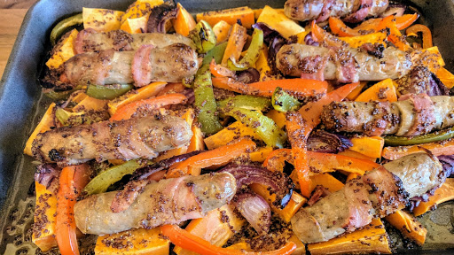

Honey-mustard sausage, bacon and sweet potato bake
Ingredients
- 2 tbsp clear honey
- 4 tbsp wholegrain mustard
- 8 British pork sausages
- 4 rashers smoked streaky bacon, halved lengthwise
- 1 red pepper, sliced
- 1 yellow pepper, sliced
- 2 red onions, sliced
- 750 g sweet potato, sliced into wedges
- 2 tsp olive oil
- fresh parsley, to serve (optional)
- salad, to serve (optional)
Instructions
- Preheat the oven to 200°C/Gas 6. In a bowl, mix the honey and mustard with 1 tbsp hot water.
- Wrap each sausage with a strip of bacon. Put them in a large roasting dish with the peppers, onions and sweet potato wedges, then pour over the honey mixture. Season and drizzle with the oil.
- Roast for 30-35 minutes until the sausages are sticky and cooked through. Sprinkle with parsley and serve with a salad.
Source
Tesco MagazineShort URL Long URL Print